사용설명서
- ☰
왼쪽 위 메뉴에서 하고 싶은 일을 고르거나
- 🔍
위 검색창에 찾는 말을 써요 (예: 계좌, 음악)
- 1
설명이 열리면 빨간 번호 순서대로 따라 해요
처음이라면
화면 구성
관리자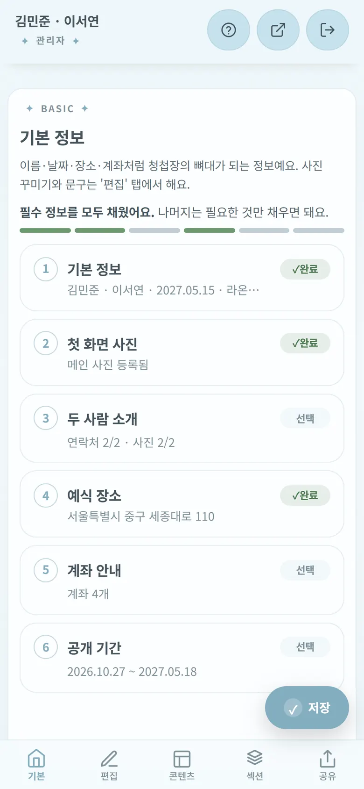
123456- 1
기본 — 이름·날짜·식장·계좌·공개 기간
- 2
편집 — 사진·글 바꾸기 (제일 많이 써요)
- 3
콘텐츠 — 참석 현황·방명록
- 4
섹션 — 순서·숨기기
- 5
공유 — 링크 보내기·카톡 카드
- 6
저장 — 바꾼 내용을 청첩장에 반영
사진·글 고치는 기본 순서
편집 탭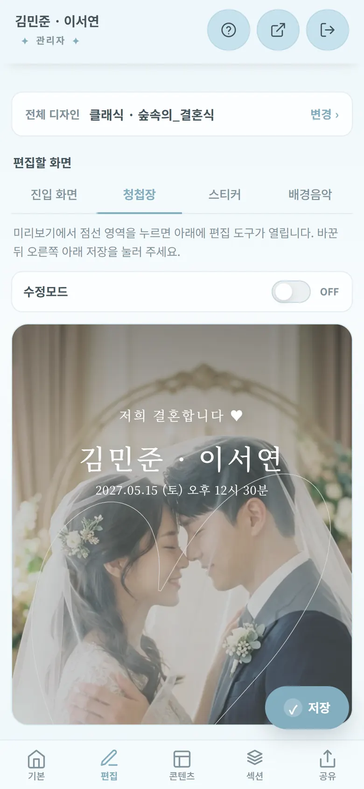
12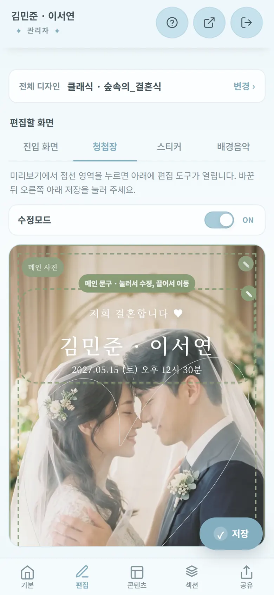
36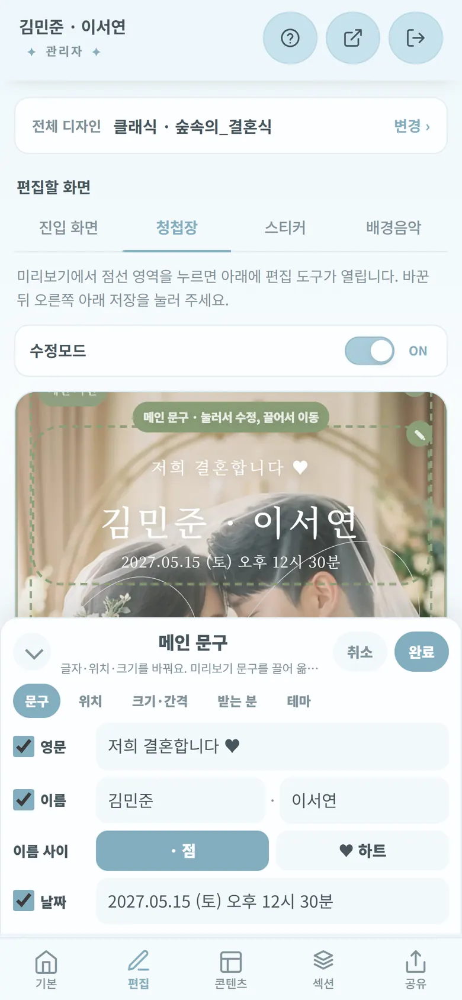
45- 1
아래 편집 누르기
- 2
수정모드 켜기 (ON) — 고칠 수 있는 곳에 점선이 생겨요
- 3
고칠 곳(점선) 누르기 — 아래에서 편집 창이 올라와요
- 4
편집 창에서 고치기 — 위 미리보기에 바로 보여요
- 5
완료 누르기 (되돌리려면 '취소')
- 6
오른쪽 아래 저장 — 저장해야 하객 화면에 반영돼요
메인 사진 바꾸기
편집 탭 · 수정모드 ON끝나면 완료 → 저장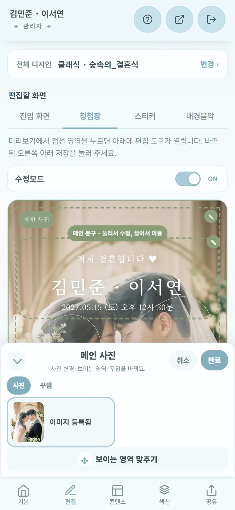
234- 1
맨 위 큰 사진 누르기
- 2
사진을 눌러 새 사진 고르기
- 3
(선택) 보이는 영역 맞추기로 얼굴 위치 조정
- 4
완료 → 저장
신랑·신부 사진 바꾸기
편집 탭 · 수정모드 ON끝나면 완료 → 저장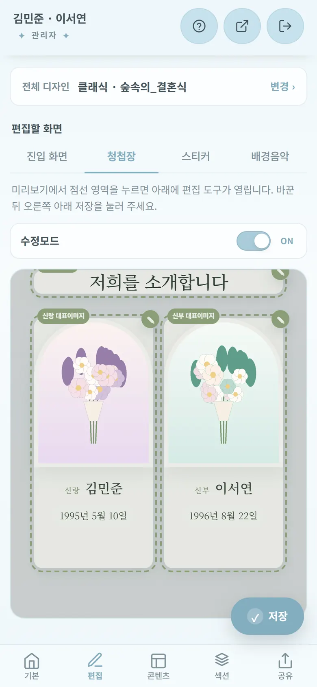
1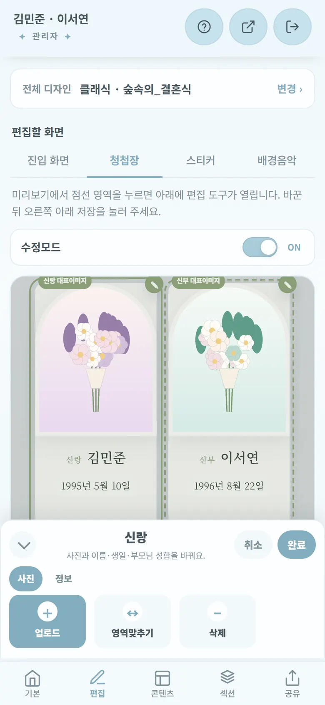
234- 1
바꿀 사진 누르기
- 2
업로드로 새 사진 고르기
- 3
(선택) 영역맞추기로 보일 부분 조정
- 4
완료 → 저장
갤러리 사진 추가·순서·삭제
편집 탭 · 수정모드 ON끝나면 완료 → 저장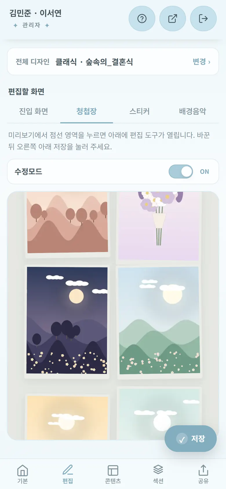
1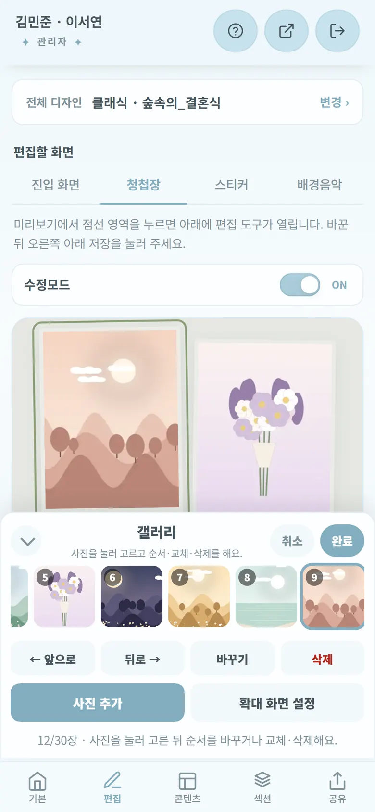
23456- 1
갤러리 사진 누르기
- 2
아래 줄에서 사진 하나 고르기
- 3
← 앞으로 / 뒤로 → 로 순서 옮기기
- 4
바꾸기 / 삭제
- 5
사진 추가 (최대 30장)
- 6
완료 → 저장
첫 화면 이름·날짜 글자
편집 탭 · 수정모드 ON끝나면 완료 → 저장- 1
사진 위 글자 누르기
- 2
칸을 눌러 글자 고치기 (체크를 끄면 그 줄이 숨겨져요)
- 3
완료 → 저장
초대글 바꾸기
편집 탭 · 수정모드 ON끝나면 완료 → 저장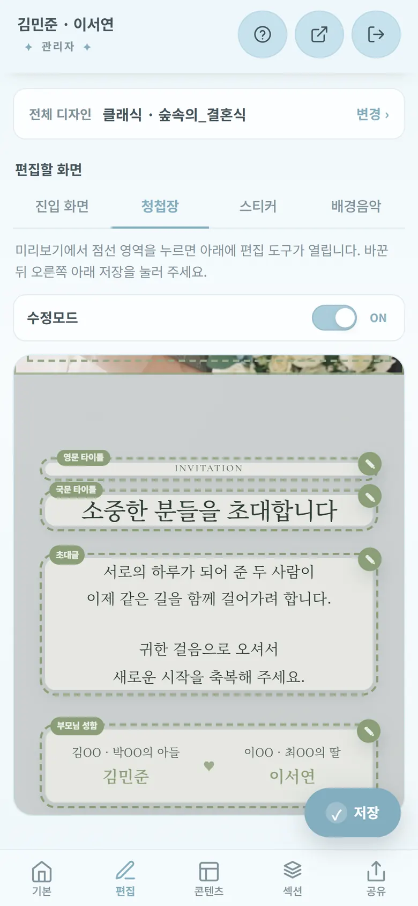
1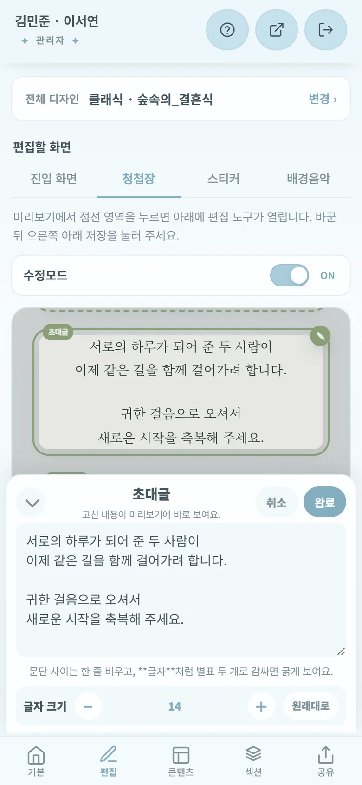
234- 1
초대글 누르기
- 2
글 상자에서 고치기 (**글자** 처럼 감싸면 굵게)
- 3
글자 크기 − / ＋
- 4
완료 → 저장
교통 안내 고치기
편집 탭 · 수정모드 ON끝나면 완료 → 저장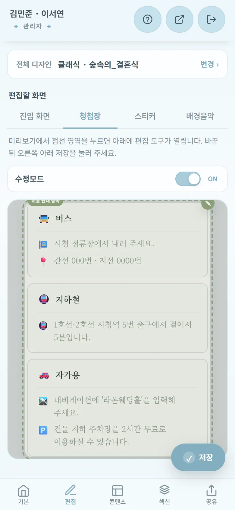
1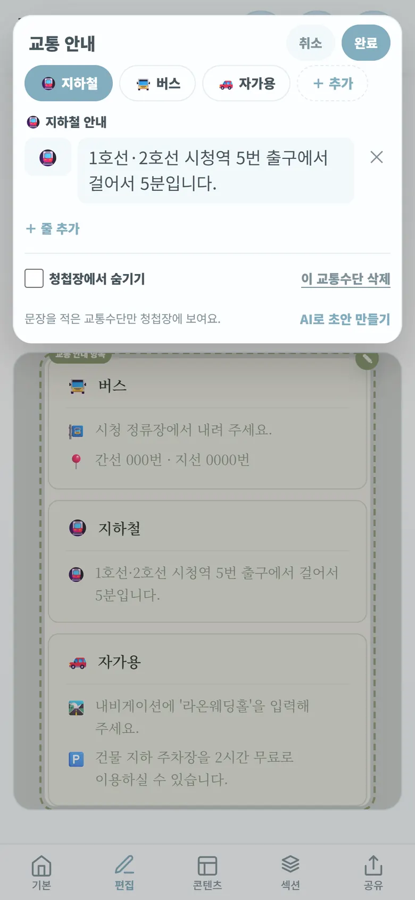
2345- 1
교통 안내 누르기
- 2
고칠 교통수단 고르기 (＋ 추가로 늘리기)
- 3
내용 고치기
- 4
＋ 줄 추가로 줄 늘리기
- 5
완료 → 저장 (식장 안내도 같은 방법)
계좌번호 고치기
편집 탭 · 수정모드 ON끝나면 완료 → 저장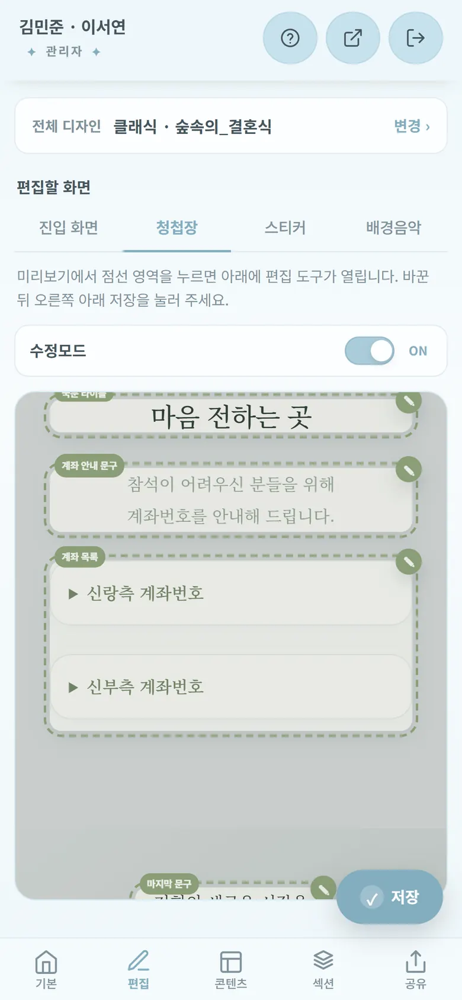
1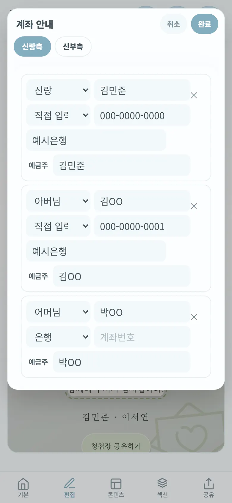
2345- 1
계좌 안내 누르기
- 2
신랑측 / 신부측 고르기
- 3
은행·계좌번호·예금주 고치기
- 4
＋ 계좌 추가 (지우기는 ×)
- 5
완료 → 저장
봉투(첫 화면) 꾸미기
편집 탭끝나면 저장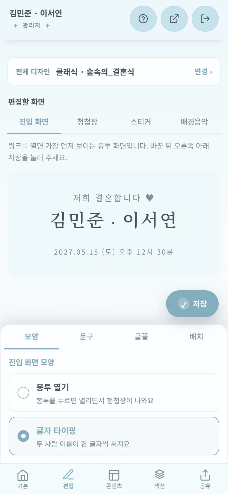
123- 1
위쪽 진입 화면 누르기
- 2
보이는 방식 고르기 (아래 문구·색·글꼴 탭도 있어요)
- 3
저장 누르기
배경음악 바꾸기
편집 탭끝나면 저장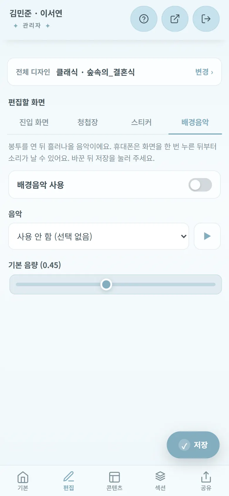
12345- 1
위쪽 배경음악 누르기
- 2
배경음악 사용 켜기/끄기
- 3
곡 고르기 (▶ 미리 듣기)
- 4
볼륨 조절
- 5
저장 누르기
손그림 스티커 붙이기
편집 탭끝나면 저장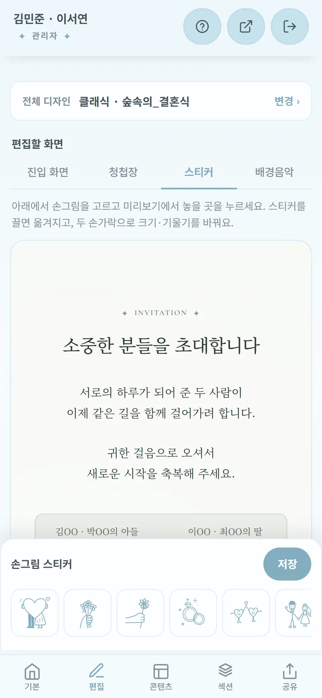
1234- 1
위쪽 스티커 누르기
- 2
아래에서 스티커 고르기
- 3
미리보기에서 놓을 곳 누르기 (끌어서 이동, 두 손가락으로 크기 조절)
- 4
저장 누르기
예식 날짜·시간·식장
기본 탭끝나면 저장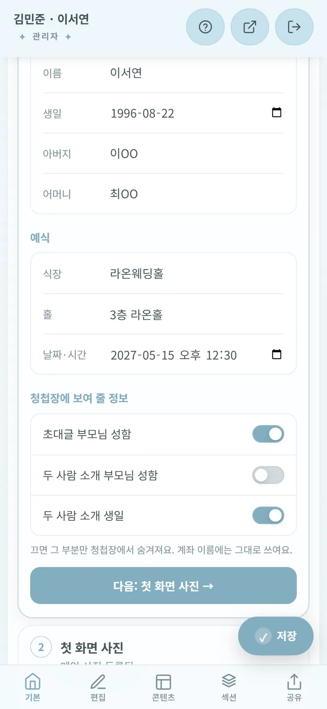
34- 1
아래 기본 누르기
- 2
1 기본 정보 누르기
- 3
식장·홀·날짜 고치기 (이름·부모님 성함도 여기서)
- 4
저장 누르기
청첩장 공개 기간
기본 탭끝나면 저장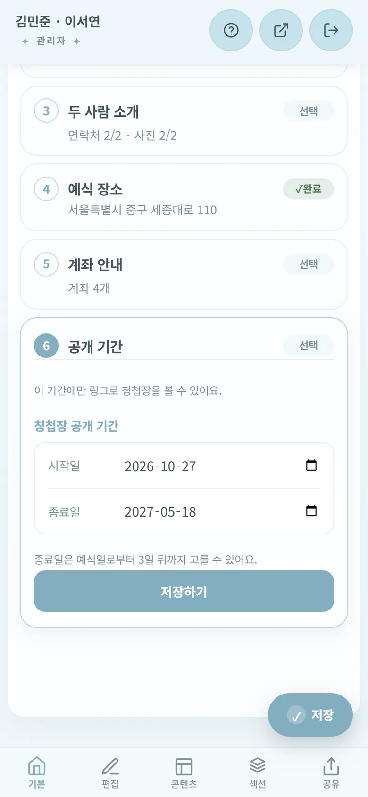
23- 1
6 공개 기간 누르기
- 2
시작일·종료일 고르기 (이 기간에만 링크가 열려요)
- 3
저장 누르기
섹션 숨기기·순서 바꾸기
섹션 탭끝나면 저장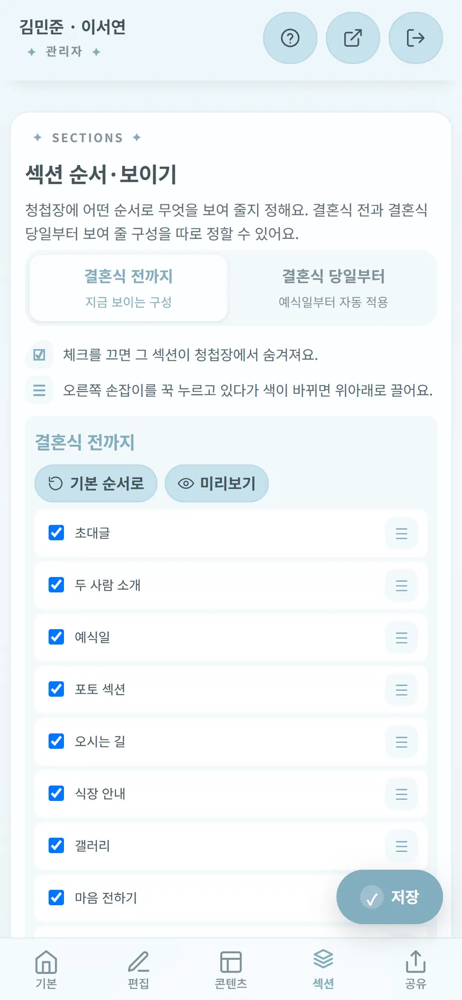
12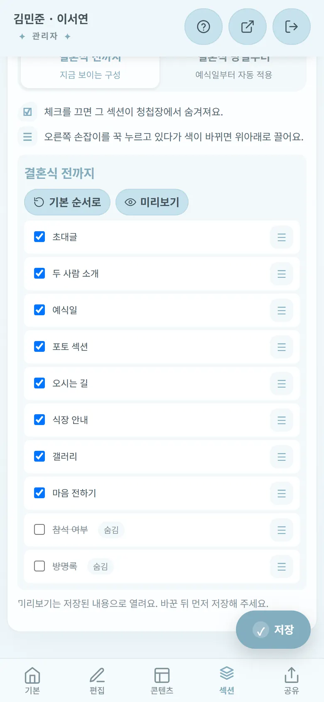
345- 1
아래 섹션 누르기
- 2
결혼식 전까지 / 당일부터 고르기
- 3
체크를 끄면 그 섹션이 숨겨져요
- 4
☰ 꾹 눌러 위아래로 끌면 순서 변경
- 5
저장 누르기
청첩장 링크 보내기
공유 탭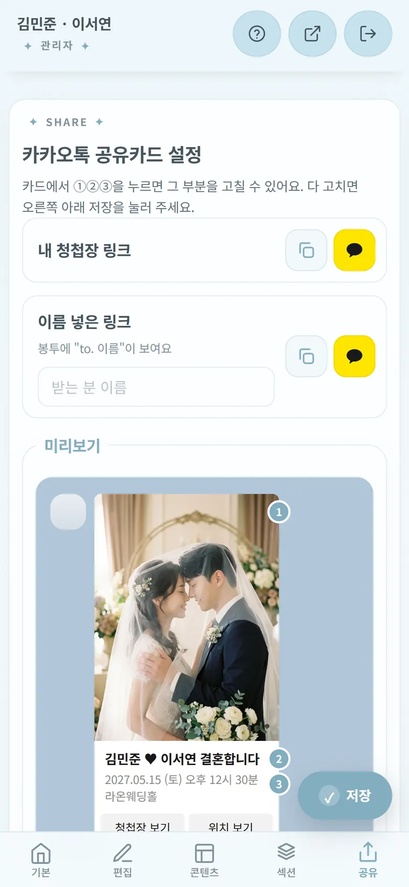
1234- 1
아래 공유 누르기
- 2
주소 복사 또는 노란 카톡 버튼
- 3
받는 분 이름 쓰기 (봉투에 'to. 이름'이 보여요)
- 4
카톡으로 보내기
카톡 카드 사진·제목
공유 탭끝나면 완료 → 저장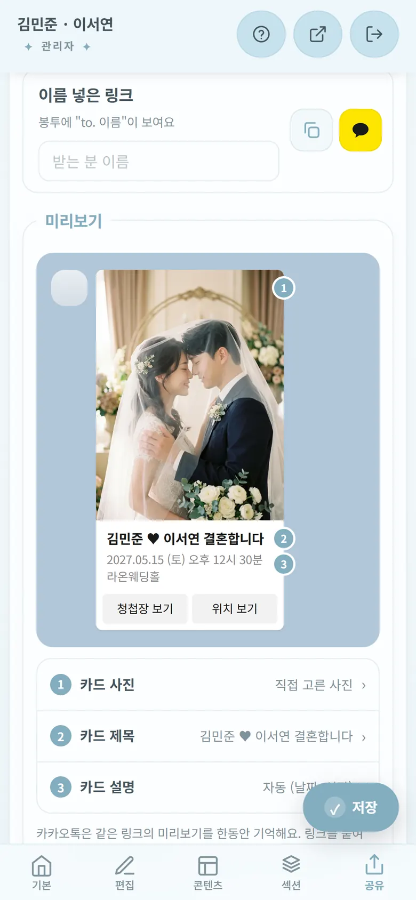
1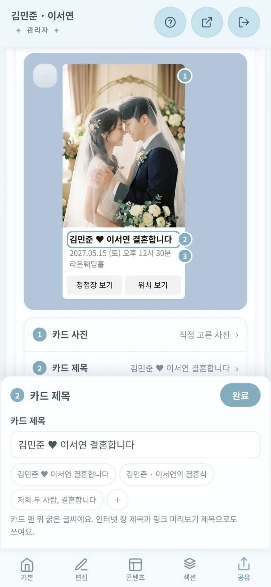
23- 1
① 사진 ② 제목 ③ 설명 중 누르기
- 2
고치거나 아래 추천 문구 누르기
- 3
완료 → 저장
참석 현황 · 방명록
콘텐츠 탭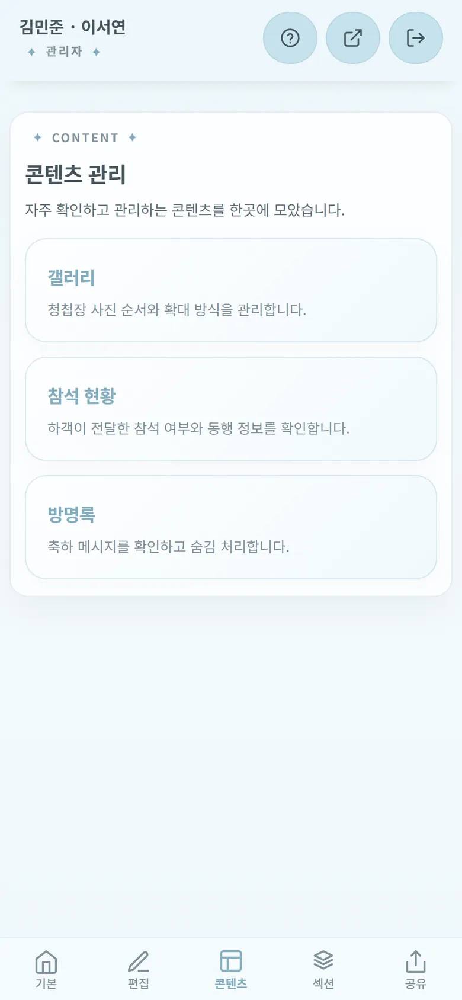
123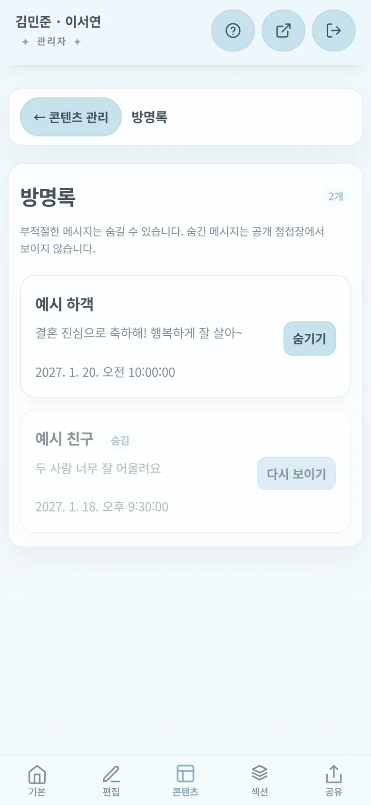
4- 1
아래 콘텐츠 누르기
- 2
참석 현황 — 응답 수·예상 인원·한 명씩 보기
- 3
방명록 — 축하 메시지 보기
- 4
숨기기 / 다시 보이기 (지워지지 않아요) · 화면은 예시 데이터
자주 묻는 질문
바꿨는데 그대로예요
저장을 눌렀는지 확인하고, 청첩장을 새로고침해요.
잘못 고쳤어요
저장 전이면 취소. 저장했으면 다시 고쳐서 저장하면 돼요.
'저장하지 않은 변경 내용' 창이 떠요
취소를 누르고 저장부터 해요.
카톡 카드가 예전 모양이에요
공유 탭의 노란 카톡 버튼으로 보내요.
청첩장이 안 열려요
공개 기간을 확인해요.
음악이 안 나와요
화면을 한 번 누른 뒤부터 나와요. 무음 모드도 확인해요.
로그인이 풀렸어요
다시 로그인하면 돼요. 그래서 자주 저장하는 게 좋아요.
그래도 모르겠어요
아무것도 지우지 말고 화면을 캡처해서 보내 주세요. 같이 봐 줄게요!